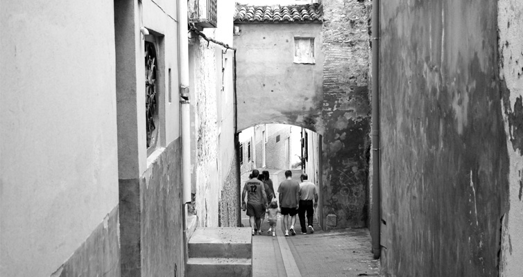

<div id="imagenPpal">
	
	<div id="textoPpal" class="pueblo">
		YATOVA
		<br />Municipio de 2000 habitantes, situado a 45 Km. hacia el interior de la provincia de Valencia,
		en la llamada Hoya de Bu&ntilde;ol.
		<br />
		HISTORIA
		<br />
		El pueblo de Y&aacute;tova, antigua ATAVA, se halla construido sobre un peque&ntilde;o cerro en torno a su iglesia.
		Su t&eacute;rmino ha estado poblado desde tiempos bien remotos, por diferentes culturas, con un enterramiento
		Eneol&iacute;tico en la Cueva Caliente. Encontrando restos de la edad del Bronce, en el Motrot&oacute;n o el Valle
		de Mijares. Pero el m&aacute;s espectacular por la importancia de los hallazgos, es el de la Sierra Mart&eacute;s,
		de la edad del Hierro, cultura Ib&eacute;rica. Tambi&eacute;n existen restos de la &eacute;poca Romana, en la Zona del
		Partidor o en el Cerro Mulet. De la &eacute;poca Musulmana, quedan numerosas muestras en la toponimia,
		como Cueva Mora "Comora", Alberca, etc., o la arquitectura del casco viejo con sus t&iacute;picas casas
		moriscas. M&aacute;s relevante es la base del actual campanario, antes mezquita musulmana.
	</div>
</div>